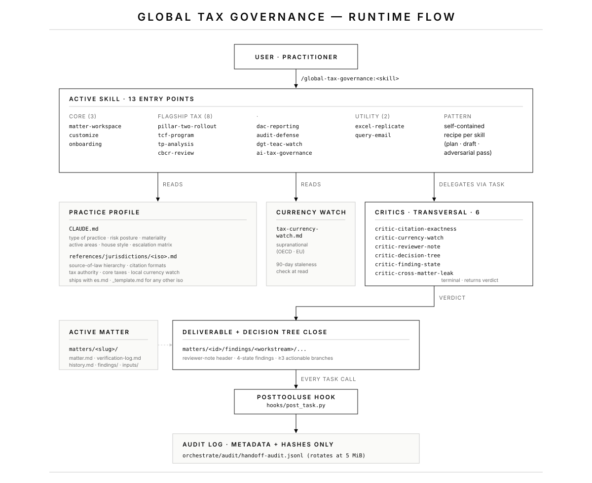

GLOBAL TAX GOVERNANCE
Plugin architecture · v0.1.0

How a skill runs
- The user invokes a skill (
/global-tax-governance:<skill>). - The skill reads
CLAUDE.md(practice profile) andreferences/jurisdictions/<iso>.md(active jurisdiction). - It reads
references/resources/tax-currency-watch.mdand checks the 90-day staleness. - It runs its self-contained recipe: plan · draft · adversarial pass — entirely inside the skill invocation.
- It delegates the close pass to the relevant transversal critics via the
Tasktool:critic-citation-exactness,critic-currency-watch,critic-reviewer-note,critic-decision-tree, and where applicablecritic-finding-stateandcritic-cross-matter-leak. - Every
Taskcall is intercepted by thePostToolUsehook (hooks/post_task.py) and written toorchestrate/audit/handoff-audit.jsonlas a metadata record (timestamp · source · target · prompt hash · response hash). Prompt and response bodies are never stored. - Critic verdicts return to the skill; if any blocker appears, the skill iterates. Otherwise it closes the deliverable with a decision tree carrying at least three actionable branches.
What lives where
| Location | Purpose |
|---|---|
skills/<name>/SKILL.md | One file per skill. Self-contained recipe with subcommands, flow, traps, deliverables, close. |
agents/critic/critic-<name>.md | The six transversal critics. Invoked via the Task tool with subagent_type=critic-<name>. |
agents/_shared/ | Role frame · output contract · function+strategy lens. Read by every critic. |
CLAUDE.md | Practice profile (jurisdiction-agnostic). Populated by /onboarding on first run. |
references/jurisdictions/<iso>.md | Local source-of-law hierarchy, citation formats, tax authority, anti-hallucination guardrails. Ships with es.md and _template.md. |
references/resources/tax-currency-watch.md | Supranational layer (OECD · EU). The local layer lives in each jurisdiction profile §5. |
references/criteria/<name>.criteria.yaml | Typed quality contracts the skills self-check against (aia · disclosure · memo · tcf · tp). |
references/templates/ | Reviewer-note header · decision-tree close · verification log · company profile. |
hooks/post_task.py | The only hook. Audit log writer. Rotation at GTG_AUDIT_ROTATE_BYTES. |
orchestrate/orchestrate.py | CLI validator + replay tool. Three intents: critic_check, request_clarification, escalate_to_human. |
matters/<slug>/ | Per-client/per-assignment workspace. Isolated by default (Cross-matter context: off). Never committed. |
The audit log discipline
Every Task call to any sub-agent (plugin critic or otherwise) is appended to the audit log with metadata only: timestamp, source agent, target agent, SHA-256 hash of the prompt, SHA-256 hash of the response, response length in characters. The hashes let you prove the same call was made twice without storing the body — important when the body is privileged client work product.
Inspect: python orchestrate/orchestrate.py --replay orchestrate/audit/handoff-audit.jsonl
The active log rotates to handoff-audit.<UTC>.jsonl when it crosses GTG_AUDIT_ROTATE_BYTES (default 5 MiB). Rotation is best-effort: if the rename fails, the hook continues appending to the active file rather than dropping records.